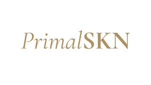

Trade Mark Journal No.2025/033 15 August 2025
UK00004243618 3 August 2025 (3,5)

- Class 3
- Anti-aging skincare preparations; Skincare preparations; Anti-aging moisturizers; Anti-ageing moisturiser; Beauty serums; Non-medicated skincare preparations; Beauty serums with anti-ageing properties; Anti-aging creams; Anti-ageing creams; Skin moisturisers; Beauty lotions; Skin moisturizers; Skin moisturizer; Skin moisturiser; Moisturisers; Skin cleansers; Moisturiser; Moisturizers; Skin moisturizer masks; Anti-ageing serum; Hairstyling serums; Exfoliants for the care of the skin; Non-medicated skin serums; Facial moisturizers; Exfoliants for the cleansing of the skin; Beauty creams; Skin lotions; Lotions for the skin; Beauty balm creams; Skin cleansing lotion; Exfoliating creams; Skin cleansers [non-medicated]; Hair moisturisers; Moisturizing creams; Aromatherapy creams; Skin lotion; Anti-aging cream; Organic cosmetics; Aromatherapy lotions; Skin hydrators; Cleansing lotions; Anti-wrinkle creams; Hair care serums; Beauty creams for body care; Facial cleansers; Exfoliant creams; Moisturising creams; Skin creams; Creams for the skin; Hair moisturizers; Moisturizing preparations for the skin.
- Class 5
- Nutritional supplements; Herbal supplements; Probiotic supplements; Flaxseed dietary supplements; Chlorella dietary supplements; Anti-oxidant supplements; Colostrum supplements; Prebiotic supplements; Mineral dietary supplements; Mineral nutritional supplements; Acai powder dietary supplements; Propolis dietary supplements; Anti-oxidant food supplements; Pollen dietary supplements; Dietary supplements in powder form; Dietary supplements with a cosmetic effect; Food supplements for sportsmen; Dietary supplements promoting fitness and endurance; Health food supplements made principally of minerals; Ganoderma lucidum spore powder dietary supplements; Activated charcoal dietary supplements; Fitness and endurance supplements; Royal jelly dietary supplements; Powdered nutritional supplement drink mix; Food supplements consisting of trace elements.
PrimalSKN LTD